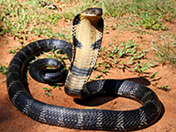
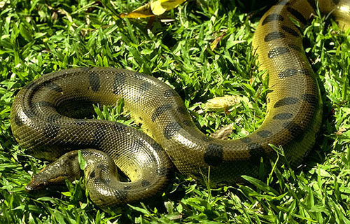

Cobras live in hot tropical areas in Africa, Australia, and Southern Asia and their relatives, the Coral Snake, can be found in the United States. They can be found underground, in trees, and under rocks. The King Cobra is not only an excellent climber but a super swimmer as well. They live in forests near streams. |
|

When it is in the water, whole body, except nostrils (which are located on the top of its head), is submerged. Anaconda can stay under water for 10 minutes before it comes to the surface to grab some air. They like to eat fish, turtles, caimans, capybaras, pigs, jaguars, deer. |
|